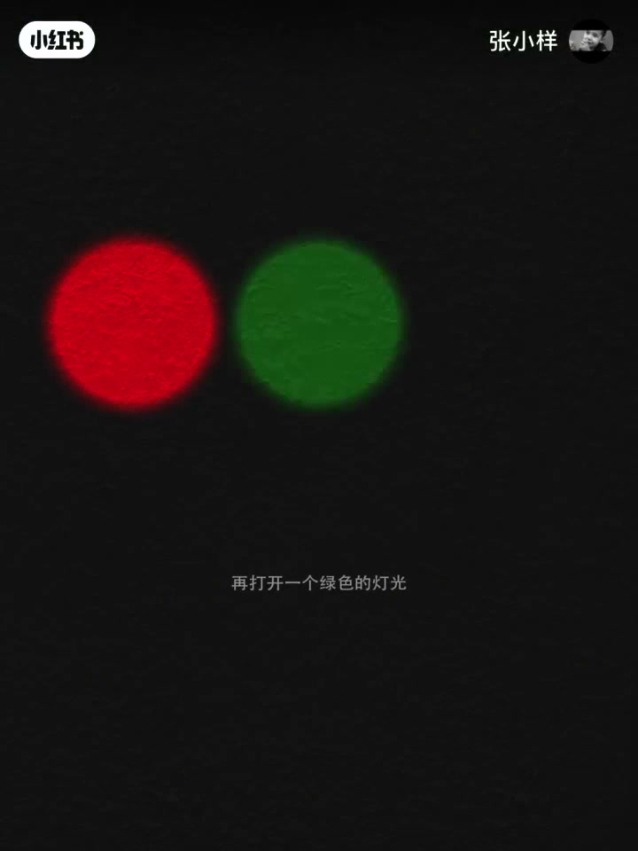
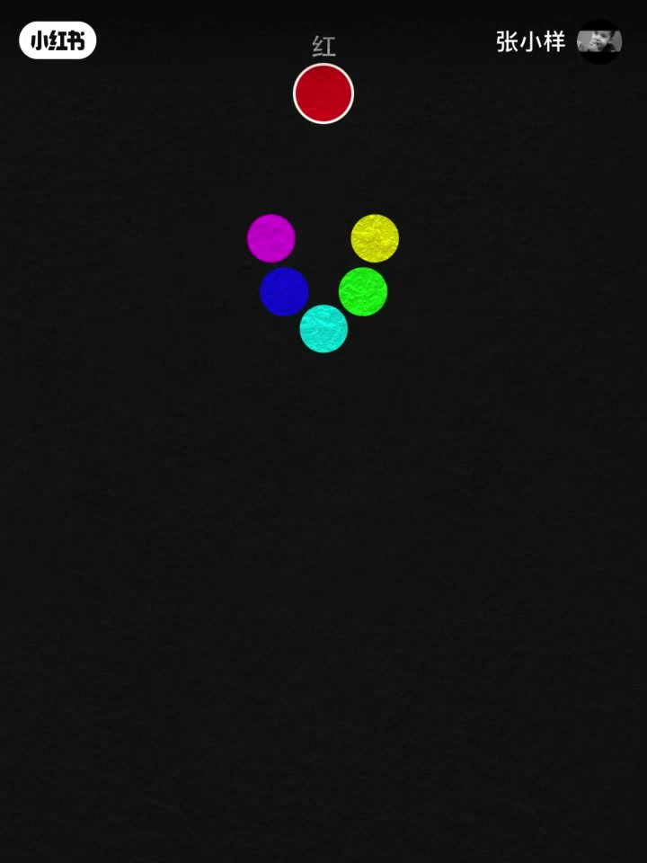
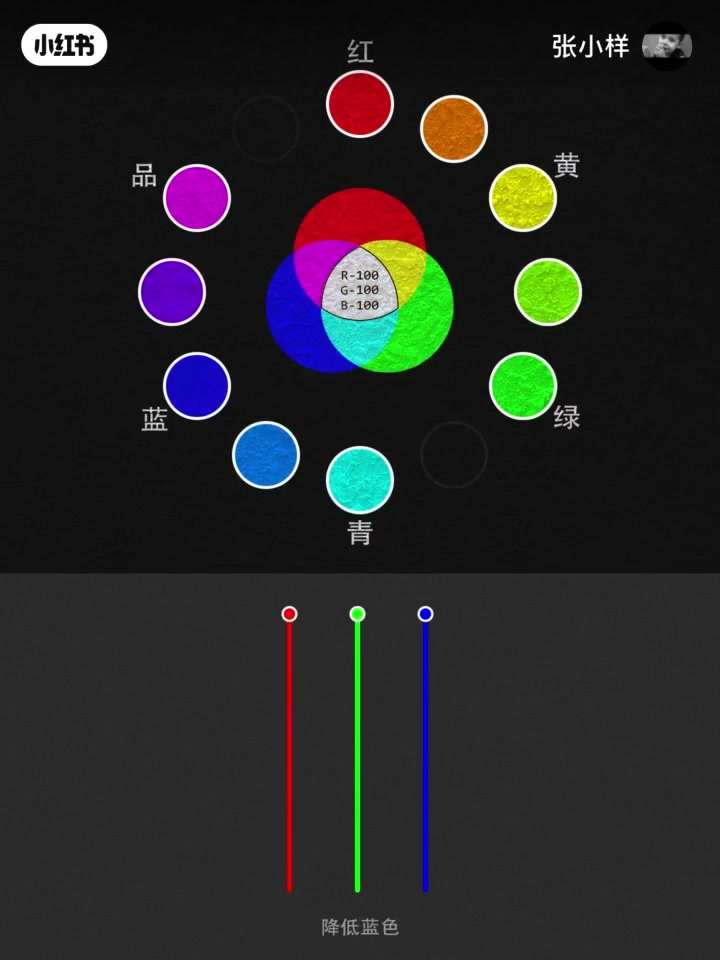
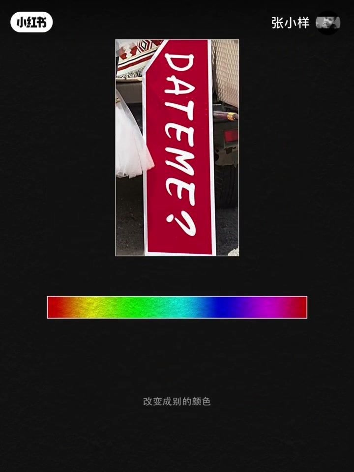
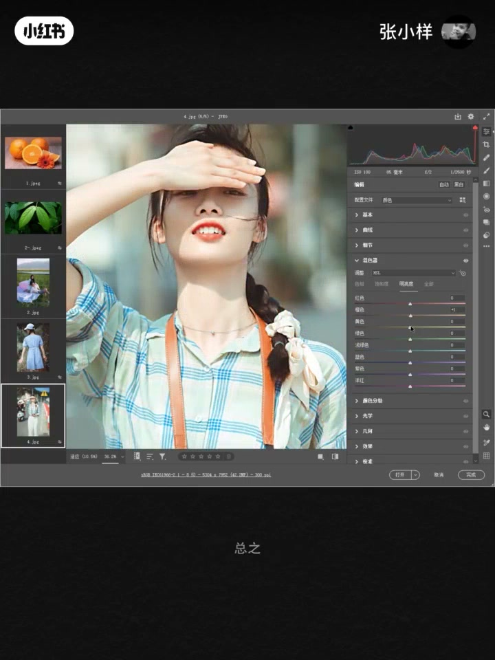

内容要点
一段 2 分钟的影像科普：在一面白色墙壁前关掉所有灯光，用红、绿、蓝三盏灯做混色实验——红+绿=黄，绿+蓝=青，蓝+红=洋红（品红），得到红绿蓝青品黄六色；再通过调节灯光强度，能混合出人眼可见的所有颜色。讲者接着说明：把这些彩色方块缩小排列就是数码照片的成像原理，并拆解色彩三大属性——色相、饱和度、明度，最后演示后期调色软件如何给水果、草木、衣服、皮肤调色：万物皆可调。
知识结构
白色墙壁、关掉所有灯；打开红、绿、蓝三盏灯。红+绿=黄，绿+蓝=青，蓝+红=洋红（品）；得到红绿蓝青品黄六种颜色。
加一个强度调节开关：降绿光出橙和青蓝，降红光出黄绿和蓝紫，降蓝光出青绿和紫红；三色不同比例混合出人眼所有颜色。正方形色块缩小排列＝数码照片成像原理。
色相＝颜色相貌、饱和度＝鲜艳程度、明度＝深浅程度，合称色彩三大属性；后期调色软件能调水果、草木、衣服、皮肤的颜色，万物皆可调。
三色光按不同比例混合可以还原人眼所见的一切颜色——这也是数码影像的底层原理；理解色相、饱和度、明度三大属性，调色就变得有章可循。
00:00-00:50暗室里的三色光实验
我们来做一个实验：这是一面白色背景的室内墙壁。想象一下在一个伸手不见五指的夜里，把房间内所有灯光全部关闭。
此时我们打开一个红色的灯光，再打开一个绿色的灯光，再打开一个蓝色的灯光。现在我们有了红、绿、蓝这三种颜色。
当红色灯光与绿色混合在一起就有了黄色；当绿色灯光与蓝色混合在一起就有了青色；当蓝色灯光与红色混合在一起就有了洋红色，洋红色也成（叫作）品红色，简称品。此时我们有了六种颜色，分别为红、绿、蓝、青、品、黄。


00:51-01:40调光开关与成像原理
为了方便理解接下来的内容，我们再给它加上一个强度调节的控制开关。把绿色灯光降低一半，黄色和青色会偏向红色和蓝色，也就形成了橙色和青蓝；降低红色能达到黄绿和蓝紫；降低蓝色能达到青绿和紫红。
就这样，通过这三种颜色灯光不同比例的变化，能混合出人眼可以看到的所有颜色。
假如这不是一个圆形而是一个正方形，再假如我们有很多这样的正方形排列在一起，改变一下它们的颜色反差，再把它们缩小、缩小、再缩小——这就是数码时代彩色照片的成像原理。


01:41-02:09色彩三属性与万物可调
在数码时代，如果你想把一个物体的颜色改变成别的颜色，只需要修改它的色相即可。色相表示的是颜色的相貌，也就是说这个颜色是什么样子；饱和度表示的是颜色的鲜艳程度；明度表示的是颜色的深浅程度。
色相、饱和度、明度被称为色彩的三大属性。
根据以上的概念，我们可以通过后期调色软件快速地调水果的颜色、调草木的颜色、调衣服的颜色、调人物皮肤的颜色——总之，万物皆可调。

完整转录（56段）
以下文本由 Whisper medium 模型自动转录，可能存在少量识别误差，已尽可能修正。
我们来做一个实验
这是一面白色背景的室内墙壁
想象一下
在一个深受不见物质的夜里
把房间内所有灯光全部关闭
就像这样
此时我们打开一个红色的灯光
再打开一个绿色的灯光
再打开一个蓝色的灯光
现在我们有了红、绿、蓝
这三种颜色
当红色灯光与绿色混合在一起
就有了黄色
当绿色灯光与蓝色混合在一起
就有了青色
当蓝色灯光与红色混合在一起
就有了阳红色
阳红色也成品红色
简称品
此时我们有了六种颜色分别为
红、绿、蓝、青、品、黄
为了方便理解接下来的内容
我们再给它加上一个油泉道路的控制开关
把绿色灯光降低一半
黄色和青色会偏向红色和蓝色
也就形成了橙色和青蓝
降低红色能达到黄绿和蓝紫
降低蓝色能达到青绿和紫红
就这样通过这三种颜色灯光不同比例的变化
能混合出人眼可以看到的所有颜色
假如这不是一个圆形
而是一个正方形
再假如
我们有很多这样的正方形排列在一起
改变一下它们的颜色反差
再把它们缩小
缩小再缩小
这就是数码时代彩色照片的成像原理
在数码时代
如果你想把一个物体的颜色改变成别的颜色
只需要修改它的色相即可
色相表示的是颜色的相貌
也就是说这个颜色是什么样子
饱和表示的是颜色的鲜艳程度
明度表示的是颜色的深浅程度
色相饱和明度被称为色彩的三大属性
根据以上的概念
我们可以通过后期调色软件快速地调水果的颜色
调绿纸的颜色
调色纸的颜色
调色纸的颜色
调色纸的颜色
调绿纸的颜色
调衣服的颜色
调人物皮肤的颜色
总之万物皆可调